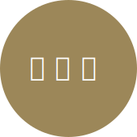

平松 聡実
SATOMI HIRAMATSU
web Designer
birthday:1993/4/18
live:東京
hometown:群馬
blood type:O
hobby:映画,アニメ,YouTube,ゲーム
webから紙まで幅広く経験を積みました。未経験のことも調べながら取り組むことができます。
今までの経験も生かしつつ、今後はUI/UXの分野にも挑戦していきたいと思っています。
2012.4…東京デザイン専門学校 ヴィジュアルデザイン科 入学
2015.3…東京デザイン専門学校 ヴィジュアルデザイン科 卒業
2015.4…インターリンク株式会社入社
2017.8…DMM.com入社
Illustrator Photoshop AdobeXD Figma
HTML CSS Git

-
動画事業 新規LP
- リリース時期
- 2021.6
- URL
- https://www.dmm.com/pr/digital/572/
- 担当業務
- ワイヤーすり合わせ
デザイン(PC/SP)
コーディング(PC/SP) - 製作期間
- 3週間
- メンバー構成
- プランナー1名
デザイナー1名 - 制作担当のポイント
- ざっくりとしたワイヤーを頂いてから案件が動き出したので、まずワイヤー内の各コンテンツはそれぞれ何を伝えたい項目なのかをヒアリングしてデザインに落とし込んでいきました。
スピード感を求められる案件だったため、実作業時間としてはデザイン制作からコーディングまでを約4人日で仕上げました。gitでソース管理、本番反映まで行いました。 - 使用ツール
- Photoshop
Visual Studio Code
Git hub
-
DMM 月額CDレンタル 新規LP


- リリース時期
- 2019.6
- 担当業務
- ワイヤー制作
デザイン(PC/SP)
コーディング(PC/SP)
分析 - 製作期間
- １ヶ月
- メンバー構成
- プランナー1名
広告運用者1名
デザイナー1名 - 制作担当のポイント
- 主なターゲットは30代〜40代の男性です(会員データからの情報)。プランナーがイメージしている競合他社のLPがありましたので、そちらのデザインテイストを参考にワイヤー制作の段階からヒアリングをしてレスポンシブのデザインとコーディングまでの一連を担当しました。その後1ヶ月間ほどの期間で数値計測をして、サイトの分析も行いました。当時の上司(メインターゲット層の30代の男性)から、昔はCDをジャケット買いしたりしていたので、CDジャケットが並んでいるデザインが良いね、と言っていただけました。
- 使用ツール
- Adobe XD
Photoshop
Visual Studio Code
CVS
-
DMM Marketing Camp バナー
- リリース時期
- 2020.2
- 担当業務
- 訴求軸考案
デザイン - 製作期間
- 2週間
- メンバー構成
- 広告運用者1名
デザイナー1名 - 制作担当のポイント
-
新規事業の案件だったので、訴求軸を考えるところから広告運用担当と2人で訴求軸をブレストし、デザインに落とし込みました。事業部の方がバナーに使用できる写真を撮影してくださる、とのことでしたので、落とし込んだデザインに合った写真の構図でお願いしました。スクール事業の広告なので、新しい扉を開くイメージで左のバナーは作成しております。右はマーケティングを勉強していることがビジュアルでもイメージがつくように、データを扱っていることを思わせるような装飾にしました。
媒体はインスタグラムのストーリー広告と、タイムライン広告です。 - 使用ツール
- Photoshop
-
彼女、お借りします ポストカード
-
制作バナー
-
自主制作 UXリサーチからユーザーテストまでのまとめ
社会人向けの学校で約半年間UI/UXの勉強をしました。UXリサーチからプロトタイプの作成、ユーザーテストまでを座学とグループワーク、ワークショップ形式で学習しました。
概要
- 担当業務
- テーマ決め、アンケート作成、デザイン、ユーザーテスト進行計画
- 製作期間
- 3ヶ月
- メンバー構成
- 3名
- 制作担当のポイント
- よりテーマを実務的にし、ほかチームは行っていなかった事前アンケート、学校スタッフへのインタビューから行いました。
- 使用ツール
- Figma
テーマ
と
ターゲット- 出席カードが紙運用だったことが不便に感じました
- 毎授業前にその日の授業の教室を受付のスクリーンで確認するのが不便に感じました
- 東京デザインプレックスに通う学生をターゲットとしました
事前アンケート
-
ユーザーリテラシーについて
デジタルツールを使い慣れているユーザーが多くおり、アプリを提供しても使ってもらえると考えました。
-
メイン機能について
紙のカードを管理することに対して、不自由さを感じているユーザーが一定数いることがうかがえました。
-
+αの機能について
プレックスプログラム(さまざまなトップクリエイターが登壇し、講義だけでなく、ワークショップ形式での実践的授業を受けることができる仕組みのこと)の予約・受講について、一定数の不便さを感じていることがうかがえました。
受講生同士とのコミュニケーションを求めているユーザーが一定数いることがうかがえました。
アンケート結果をふまえた機能
-
当日の授業の使用教室の表示、教室に着いたら出席できる機能です
-
受講生同士の交流を促進させるためのプロフィール機能です。SNSのアカウント名などを任意で追記することができます。
-

学校への問合せ方法が現状メールが主な手段なので、そこをアプリ側でカバーできるようにチャット機能を追加しました。
-
プレックスプログラムの開催連絡も現状メールで連絡がくるようになっているので、開催の連絡と予約を取れる機能を追加しました。
プロトタイプURL
ユーザーテスト
全機能が問題なく使用できるか下記タスクをテストしてもらいました。
スムーズにいかなかった箇所、わかりにくく感じた箇所をヒアリングしてプロトタイプを修正しました。No. タスク 結果 1 サインアップができるか ○ 2 出席を取ることができるかどうか △：修正 3 授業スケジュール、開催教室を確認することができるかどうか ×：要対策 4 受講生同士の情報を共有し合え、交流できるかどうか ○ 5 学校側への問い合わせをアプリ内で行えるかどうか ×：要対策 6 プレックスプログラムの開催情報を確認し、予約ができるかどうか ×：要対策